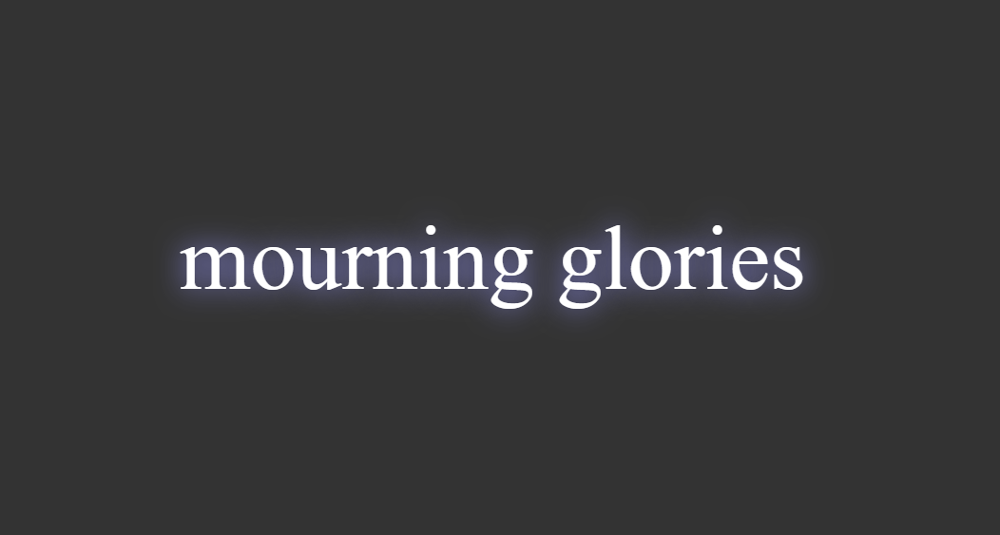

a collection of curiosities by adie nunn
Say hi: me@adienunn.com


A cheery blog of slightly more 'indie'-leaning funeral songs. Concept devised by my friend Si Williams. Made with WordPress.
For the game 'Genshin Impact'. It picks what (real life) day of the week it is and tells you characters have talent books available to farm that day. Made with JavaScript.

Uses the unofficial PokeAPI to get Pokemon images and a separate data object of Pokemon name to reduce calls to said API. Made in a day. Made with JavaScript.